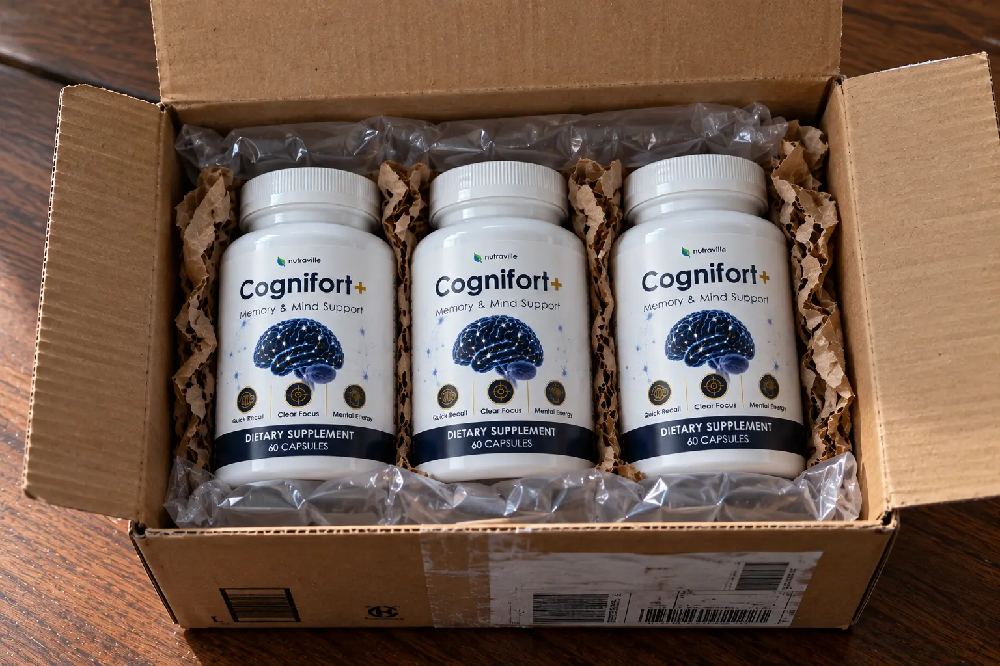

CogniFort Plus Review (2026): The "9-Second Ritual" Myth & Fake Clone Warning

Let’s cut through the internet marketing noise.
If you are researching CogniFort+, you have likely seen the lengthy presentation about a "9-second forbidden fat ritual" originating from Himalayan communities. You are probably dealing with frustrating memory lapses, poor concentration, and what the manufacturer calls "brain lag."
But with so many identically named websites—like Cogniffort, TheCognifort, and Cognifort.shop—how do you know which one is the real formula, and which one is a cheap knockoff designed to take your money?
We bypassed the emotional sales pitch to conduct a purely forensic audit of the official CogniFort+ (CognifortPlus.com) offer. We broke down the botanical science behind the "fat ritual," analyzed the transparency of their ingredients, and checked the fine print of their 180-day guarantee. Here is what you need to know.
📌 TL;DR: The Forensic Verdict
Is CogniFort+ legitimate? Yes, provided you order from the verified official checkout. The "9-second fat ritual" is actually just a clever marketing story for a very real scientific principle: the active nootropic in the formula (Bacopa Monnieri) is fat-soluble and absorbs better with dietary fats. While we criticize the manufacturer for hiding the exact milligram dosages behind a proprietary blend, the combination of Lion’s Mane (Erinacine A), Ginkgo Biloba, and Bacopa is highly regarded in clinical cognitive wellness. Due to massive domain confusion, you must use the official ClickBank funnel to ensure you receive the genuine formula and the full 180-day money-back guarantee.
1. ⚠️ Alert: The "9-Second Forbidden Fat" Myth Explained
The entire sales pitch for CogniFort+ hinges on a story about a traditional, "forbidden" fat ritual. To an average consumer, this sounds like magic. To a nutritional researcher, it is just basic lipid biochemistry.
The Science Behind The Story
The sales page suggests mixing certain compounds with clarified butter (ghee) or healthy fats. This isn't a mystical secret—it is because the primary cognitive enhancer in this formula, Bacopa Monnieri, is highly lipophilic (fat-soluble).
When you consume fat-soluble botanical extracts with a healthy fat source, they cross the blood-brain barrier much more efficiently than if taken on an empty stomach. The "ritual" is just a marketing wrapper for a scientifically sound absorption technique.
2. Domain Confusion: How To Spot The Fake Clones
This is the most critical part of our investigation. The cognitive supplement niche is plagued by unverified third-party sellers.
Right now, if you search for this product, you will see domains like Cogniffort.com (with two F's) or third-party listings on Amazon. Buying from these unverified sources presents a massive financial risk. Many of these clone operations sell vastly underdosed capsules and reduce the refund window to just 30 or 60 days.
The official product is housed on the CognifortPlus.com domain network and is processed securely through ClickBank. This is the only channel that honors the 6-month (180-day) money-back guarantee.
3. The Ingredient Audit: What’s Actually Inside?
What exactly are you putting into your body to combat "brain lag"? The manufacturer lists five primary botanicals. However, we must point out a transparency issue: they rely on a proprietary blend, meaning the exact milligram (mg) breakdown of each individual extract is not fully advertised.
🔬 Verified Active Botanicals
Here are the five core compounds utilized in the CogniFort+ matrix and their clinical relevance:
| Botanical / Compound | Scientific Function | Dose Transparency |
|---|---|---|
| Bacopa Monnieri | A traditional Ayurvedic herb heavily researched for supporting memory recall and learning retention. | Hidden (Proprietary) |
| Lion’s Mane Mushroom | Contains Erinacine A, known to stimulate Nerve Growth Factor (NGF) for neural health. | Hidden (Proprietary) |
| Ginkgo Biloba | Supports healthy cerebral blood flow and circulation to the brain. | Hidden (Proprietary) |
| Rhodiola Rosea | An adaptogen used to combat mental fatigue and stress-induced brain fog. | Hidden (Proprietary) |
| Panax Ginseng | Supports sustained mental energy and concentration without the caffeine crash. | Hidden (Proprietary) |
Note: While the proprietary blend hides the exact ratios, combining Ginkgo (for blood flow) with Lion's Mane (for neuroplasticity) is a highly respected synergistic approach in modern nootropic science.
4. Real Pricing & The 180-Day Guarantee
When investigating cognitive supplements, we always calculate the true cost per bottle. The official CognifortPlus.com checkout lists the following tiers:
- 1 Bottle (30 Days): $49.00 + $9.99 Shipping
- 3 Bottles (90 Days): $117.00 Total ($39.00 per bottle) + $9.99 Shipping
- 6 Bottles (180 Days): $174.00 Total ($29.00 per bottle) + Free Shipping
The Strategic Discount: The seller uses a common volume-discount model. Buying one bottle is heavily penalized by shipping fees. The 6-bottle tier drops the price significantly to $29 per bottle and waives the shipping cost.
The Ultimate Safety Net: The main reason to buy from the official link is the 180-Day Guarantee. Because the transaction is handled by ClickBank (a massive, trusted retail platform), you are granted a full 6 months to test the product. If your mental clarity does not improve, you can request a refund, effectively removing your financial risk.
Secure The Official Formula & 180-Day Guarantee Below:
Go To The Official Secure Checkout >>5. Financial Verdict: Is CogniFort+ Worth It?
CogniFort+ is not a pharmaceutical drug. It will not cure Alzheimer's or reverse severe dementia. If you are experiencing serious cognitive decline, you must consult a neurologist immediately.
🛡️ Our Purchasing Recommendation
However, if you are simply an aging adult frustrated by walking into a room and forgetting why you are there, or struggling to maintain focus during conversations, CogniFort+ is a highly viable support tool.
Yes, we are critical of their "fat ritual" marketing story and their hidden proprietary dosages. But underneath the marketing, the actual ingredient profile (Lion's Mane, Bacopa, Ginkgo) represents the gold standard of natural cognitive support.
At $29 a bottle (on the 6-month package), backed by a massive 180-day refund policy, the financial risk is practically zero. Make sure you use the verified official link below to avoid the rampant third-party clones.
Secure Your Supply Risk-Free Here >>